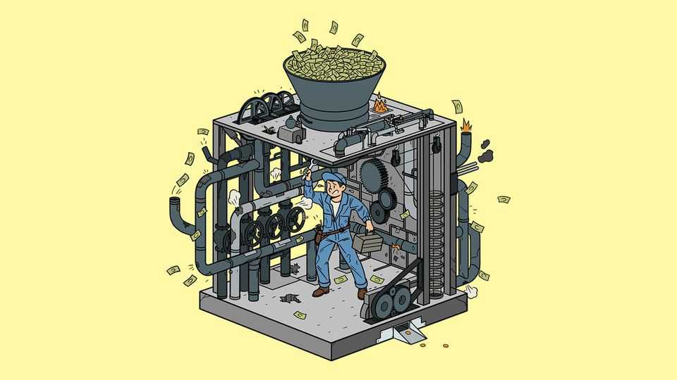

A hurricane is coming to tax systems
Governments should be preparing, but most aren’t

Oct 1st 2026
THE YIELD on ten-year US Treasuries has charged through the 5% barrier. The spread between French government bonds and German Bunds is at levels not seen since the euro-zone crisis in 2012. Britain’s newish prime minister has this week set out a plan for spending bolstered by a taboo-busting promise to curb state-pension increases—and yet is still in a fiscal pickle. Across the rich world, countries are struggling to coax more growth out of their economies. And that’s not the worst of it. As we explain this week, the tax base in all countries, which depends heavily on taxing labour, may be upended by artificial intelligence.
Add these problems together, and it is as if a mighty hurricane were about to hit the rich world’s tax systems—which are hopelessly unprepared. The way the state raises money is wasteful, unfair and perverse. You would have thought governments would be scrambling to strengthen the system before the hurricane makes landfall, but as ever they are running away from tax reform instead.
The accumulated flaws of modern tax systems are so ubiquitous that they have become part of the economic backdrop. Taxes are full of needless complexity. In Germany the rate of value-added tax (VAT) on oat milk is more than double that on cow’s milk, for example. Such widespread special treatment has ruinous fiscal consequences. Across the OECD, a club of mostly rich countries, consumption taxes raise only 58% of what they could if there were no carve-outs and no evasion.
Tax systems also create perverse incentives. When a parent in Britain increases their net income from £99,999 ($131,500) to £100,000, they automatically lose free child care worth thousands of pounds. This can prompt some of Britain’s most productive workers to cut their hours or overstuff their pensions.
And taxes are widely seen as unfair. In Britain the median employee pays 55% more tax than their self-employed counterparts. Many people feel the rich aren’t doing their bit. In California voters will decide in November whether to charge a one-off 5% levy on residents with wealth of over $1bn.
No one knows when the fiscal weather will turn. But rapid advances in AI could accelerate matters. Taxes on labour are the workhorse of most tax systems worldwide, raising around half of all revenue in the OECD. In the coming years AI could well displace workers or cut their wages even as corporate profits rise, shrinking labour’s share of GDP. This in turn could reduce revenues and increase benefits payments, making deficits even harder to support.
Optimists may hope that superfast growth will make the maths easier to handle. Yet The Economist has looked at what would happen in rich countries if labour’s share of national income fell by ten points. By our calculations, Italy’s budget deficit would double as a share of GDP and Germany and France would not fare much better. In addition, the capacity for tax avoidance would no longer be limited by human ingenuity. Point countless AI agents at Britain’s 23,000-page tax code and hundreds of new tax-avoidance strategies are likely to emerge—and don’t bet on the Treasury to keep up.
What to do? Given that AI is likely to mint vast fortunes for a select few, countries may be inclined to follow California’s proposal and introduce wealth taxes. Yet such taxes will probably backfire, either because they are too difficult to administer or because they cause rich people to flee. Previous attempts have proved unworkable. In 1990, 12 rich countries taxed fortunes; today just four do.
A more fundamental overhaul is needed. Wealth should be taxed more via capital-gains taxes, which currently overpenalise normal returns and undertax supernormal ones. A start would be to introduce a higher headline rate and allowances that exempt normal returns.
At the same time, the burden on labour should lighten. That would be a hedge against disruption from AI, and remove an obstacle to employment in countries where labour taxes are crushing. In Belgium they constitute 52% of the costs of employing a person.
Consumption should be taxed more heavily, with a focus on ending the litany of exemptions. That would have the useful side-effect of taxing the spending of the very rich. This might not curb the influence Elon Musk can buy, but it would ensure the state gets a bigger cut when Mr Musk buys another plane. Finally, codes should be radically simplified.
None of this will be easy. The losers will hiss more loudly than the winners will cheer. But change is coming, like it or not. The country that gets ahead of the hurricane will one day thank the politicians who had the foresight to act. ■